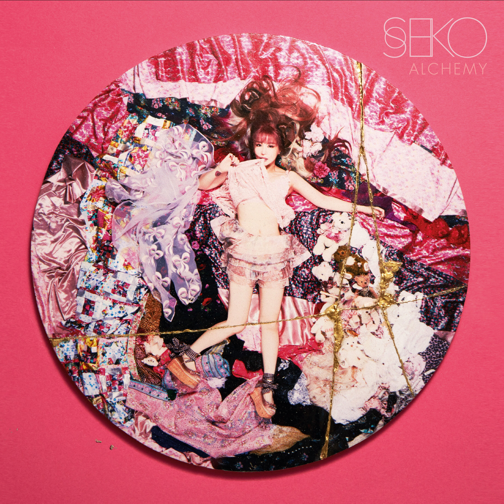
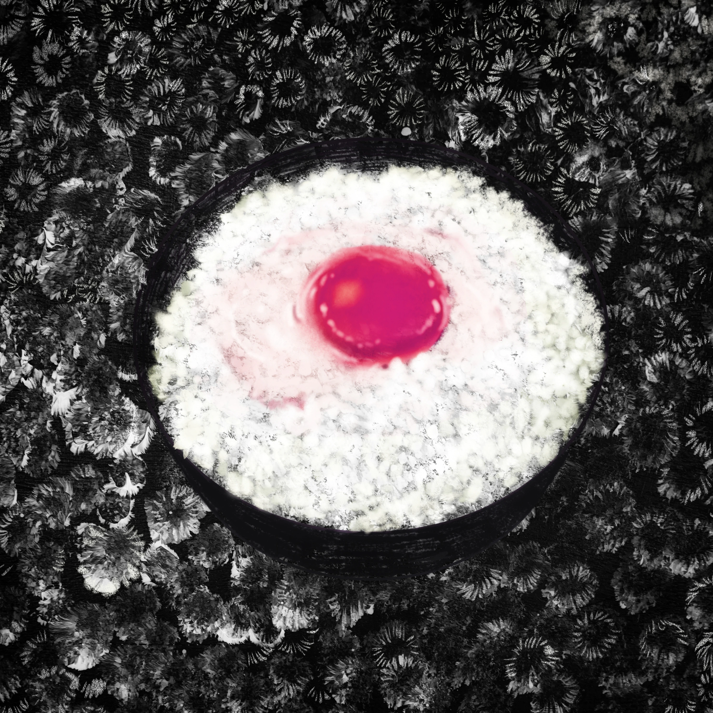
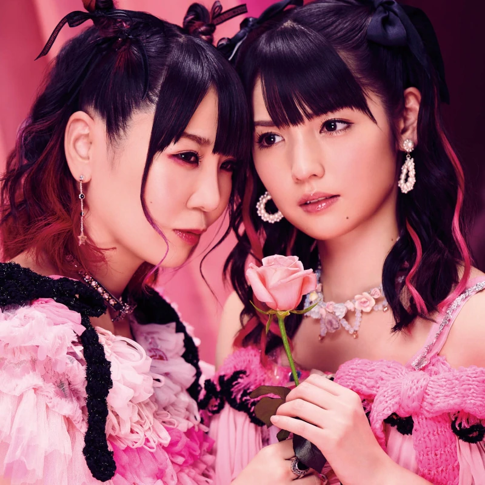
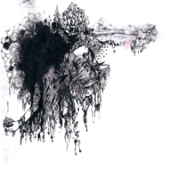

- 2022.10.26
超天国 - 
- 2021.04.19
Alchemy 
- 2021.07.07
PERSONA#1 
- 2020.12.09
Kintsugi - 
- 2020.02.12
大森靖子 
- 2019.06.12
Re:Re:Love - 
- 2019.03.13
絶対彼女
feat.道重さゆみ 
- 2018.07.11
クソカワPARTY 
- 2017.12.27
MUTEKI
（アナログ盤） 
- 2017.09.27
MUTEKI 
- 2017.08.30
draw（A）drow 
- 2017.03.15
kitixxxgaia 
- 2016.12.14
オリオン座/
YABATAN伝説 
- 2016.10.26
POSITIVE STORESS 
- 2016.08.24
ピンクトメトセラ/
グッとくるSUMMER 
- 2016.03.23
TOKYO BLACK HOLE 
- 2016.02.17
愛してる.com/劇的JOY!
ビフォーアフター
（両A面シングル） 
- 2015.10.07
❤爆裂！ナナちゃんとイく
ラブラブ洗脳ツアー❤～
ノスタルジック
中野サンプラザ～ 
- 2015.07.15
「大森マジック特盛り盤 」
2nd両A面シングル
マジックミラー/さっちゃんのセクシーカレー - 
- 2015.03.04
トカレフ/
大森靖子＆THEピンクトカレフ 
- 2015.03.04
ワンダフルワールドエンド 
- 2014.12.03
洗脳 
- 2014.07.31
ミッドナイト清純異性交遊 
- 2014.09.18
メジャーデビューシングル
きゅるきゅる 
- 2014.04.19
PINK 
- 2014.04.19
魔法が使えないなら死にたい - 2014.03.20
君と映画
B面少女３号 
- 2013.11.09
ポイドル - 2013.12.11
黒歴史再録 
- 2013.08.29
つまらん夜はもうやめた 
- 2013.0320
魔法が使えないなら死にたい - 2012.04.15
PINK 
- 2013.12.11
絶対少女